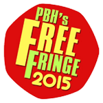
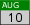
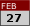
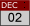
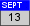

|  |
|  |
10th - 23rd of August 2015 - PBH Free Fringe 2015
Show starts at 10:00pm
|
|  |
27th of February 2015 - Bristol Folk House
Doors open 7.30pm Starts 8.00pm
|
|  |
2nd - 6th of December 2014 - Alma Tavern Theatre
7.30pm evenings plus Saturday matinee 2.30pm
|
|  |
13th - 14th of September 2014 - Stroud Theatre Festival
Saturday 15:30 - 17:00 The Subscription Rooms - Ballroom
Sunday 17:30 - 21:00 The Subscription Rooms - Ballroom
"feedback has been amazing, excellent performances"
- Stroud Festival, 2014
|